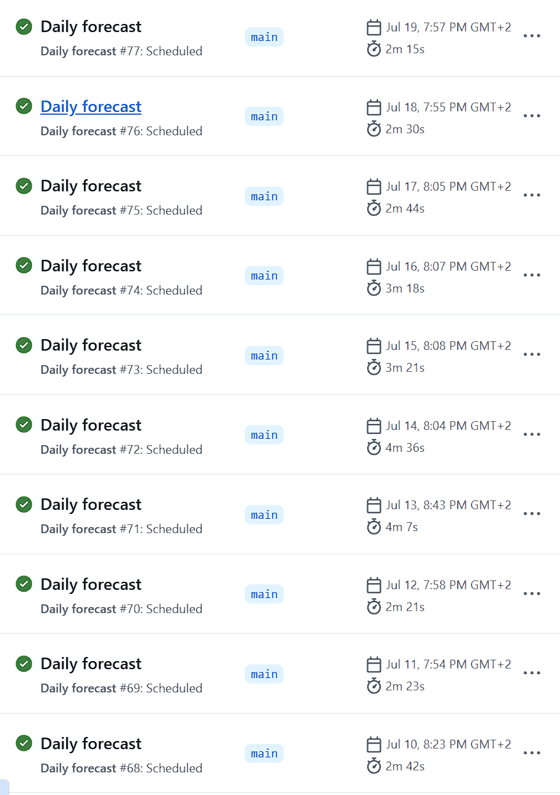

ddkast · Data-Driven Optimization · SoSe 2026 · AIT
A deterministic, EU-AI-Act-compliant forecasting pipeline that trains, predicts, and submits to a live leaderboard — every day, automatically, with no human in the loop.
01 · The problem
Every day before the deadline, submit 24 hourly values — tomorrow 00:00 to 23:00 UTC, in megawatts — for the Germany/Luxembourg bidding zone.
ENTSO-E actual load · ENTSO-E's own published day-ahead forecast (DAF) · Open-Meteo weather (15 variables) · calendar structure (hour, weekday, month, holidays)
24 strictly positive MW values, one per hour, rounded to 2 decimals, delivered as a pull request to the leaderboard repository.
02 · The data
The target. 15-minute Europe/Berlin readings, Jan 2022 → Apr 2026, resampled to hourly UTC. 37,944 clean rows.
The operator's own published forecast. Never a model input — it is the benchmark to beat.
Temperature, humidity, precipitation, cloud cover, wind, pressure… for a Frankfurt reference point. Archive for history, forecast endpoint for the future hours the model must predict into. No API key.
03 · Architecture
Each stage is independently runnable, testable, and auditable. No stage calls another in memory — state flows through files, via one storage abstraction.
Two methods: read(name) / write(name, df). All pipeline I/O funnels through it — storage is swappable and every access is one auditable chokepoint.
Where download gets raw frames: the live APIs in production, or seeded offline fixtures in CI. The stage can't tell the difference — so the whole pipeline runs end-to-end in CI with no network and no key.
04 · The model
Calendar (25): smooth RBF encodings of hour (10), weekday (7), month (6) —
so 23:00 sits mathematically next to 00:00 — plus German holiday and weekend flags.
Weather (15): the Open-Meteo columns, joined on the hourly index.
Any NaN in the joined matrix raises (CR-3).
ForecasterRecursiveModel does its own data loading — it would bypass the DataStore audit seam. The project uses the lower-level fit/predict pieces instead.
05 · Evaluation protocol
A single train/test split can flatter or damn a forecaster by chance. The protocol here re-runs the whole exercise at 365 evenly spaced daily origins across the final year of data.
7-day seasonal naive — tomorrow 3 pm = last Tuesday 3 pm. The honesty floor:
a model that can't beat it has learned nothing.
ENTSO-E DAF — the official operator forecast. The professional ceiling.
MAE (primary — robust, in interpretable MW) plus RMSE, MAPE, SMAPE, each aggregated to mean ± std ± median across folds, with skill scores 1 − MAE_model / MAE_benchmark.
06 · Results
Two evaluations tell the same story. Over a full year of backtest and over the live challenge, the model beats the 7-day naive and the ENTSO-E day-ahead forecast — and our challenge-period numbers land within 2.4 % of the official leaderboard, so the evaluation harness is honest, not flattering.
365-fold backtest · 2 May 2025 → 30 Apr 2026 · archived weather
Live challenge · 40 daily submissions · forecast weather
Do the three evaluations agree? · full metrics · MW
| Evaluation | Window | MAE | RMSE | MAPE | vs leaderboard |
|---|---|---|---|---|---|
| Official leaderboard (Bartz) | 40 submissions · rank 15 / 20 | 1,757 | 2,029 | 3.47 % | reference |
| Our challenge eval | same 40 days · forecast weather | 1,716 | 2,049 | 3.4 % | −2.4 % (−41 MW) |
| Our 365-fold backtest | 364 folds · archived weather | 1,468 | 1,758 | 2.7 % | optimistic * |
Our challenge scoring reproduces the leaderboard's MAE to within 41 MW — and our ENTSO-E benchmark (2,123 MW) matches the leaderboard's ENTSO-E score (2,150 MW) too. * The backtest reads archived weather; the live run only has forecast weather, which is why 1,468 < 1,716.
07 · Production
GitHub Actions runs the real pipeline against the live APIs and opens a pull request on the leaderboard.

A scheduled run trains, predicts, validates the 24-row slice, and opens the leaderboard PR — unattended, in 2–4 minutes.
08 · The constraint that shaped everything
Load forecasting for critical infrastructure falls under Annex III No. 2. Articles 9–15 apply — and were operationalised as four non-negotiable code rules enforced on every module.
| Rule | Name | What it means in the code | AI Act |
|---|---|---|---|
| CR-1 | No dead code | Every function and branch is reached by a test or docstring example. | Art. 9, 13 |
| CR-2 | Determinism | Same input → bit-identical output. Fixed seeds, fixed iteration order, pinned data windows, integer-nanosecond fold strides. | Art. 12, 15 |
| CR-3 | Fail-safe processing | Invalid input (NaN, wrong dtype, gaps) raises a specific exception — never silently imputed. | Art. 10, 15 |
| CR-4 | Minimal attack surface | One vetted library (spotforecast2-safe) on the production path; SHA-pinned CI actions; least-privilege tokens. | Art. 15 |
Plus: all storage behind a DataStore protocol · every run leaves audit artifacts · rolling-origin backtesting instead of a single split (Art. 9) · model cards for transparency (Art. 13).
09 · Two production incidents
Daily run #12 died: "Exog matrix has 720 NaN values" — 48 hours × 15 weather columns.
A merge refactor had trimmed weather to the load's time range, deleting the future
weather the forecast needs (in production the entire forecast window lies past the last actual).
The e2e test missed it because its window sat inside the load range.
Fix: trim weather only at the start, keep the forecast tail.
Lesson: DAF and weather need opposite alignment rules — now an explicit,
tested asymmetry.
In July 2026, Open-Meteo's archive stopped serving 10 m wind. Because missing data
raises instead of imputing (CR-3), the pipeline failed loudly rather than silently
training on NaNs.
Fix: a two-line, dated change dropping the wind columns — reverted two lines
when the archive recovered eight days later.
Lesson: fail-safe + one source of truth for the column list turns an upstream
outage into a trivially reviewable patch.
10 · How it was built
| Phase | What landed | Why |
|---|---|---|
| 1 · Milestone 1 | Full download → evaluate skeleton, CLI, config, synthetic seed data | A working end-to-end backbone before any sophistication |
| 2 · CI hardening | Parallel lint/typecheck/test jobs, coverage gate, SHA-pinned actions, offline smoke test | Reproducible, supply-chain-safe checks on every PR |
| 3 · Weather | Open-Meteo fetch, merge integration, 40-column exog matrix, forecast-weather path | Real predictive signal beyond autoregression |
| 4 · Ergonomics | Env-var config precedence, auto-format hooks, IDE run configs | CI overrides via env; frictionless contribution |
| 5 · Going live | Daily-forecast workflow, submission stage, least-privilege fork flow | From experiment to competing daily system |
| 6 · Merge contract | "Load is the spine" alignment; the weather-tail production fix | One correctly aligned dataset under everything |
| 7 · Compliance | Fail-safe metrics, fold generator, config cleanup, store robustness | CR-3 closed at every layer; backtest scaffolding |
| 8 · Backtest live | Folds wired through all stages, half-open intervals, pinned production origin, download cache, model cards, wind-outage handling | The Art. 9 evaluation protocol made real; ops polish |
11 · What's next
A regulated-grade forecasting system, not a notebook: deterministic end-to-end, fail-safe at
every boundary, evaluated by a 364-fold rolling-origin protocol — beating the official
ENTSO-E forecast both in backtest and on the live leaderboard — and submitting a real
forecast every single day.
ddkast · docs/presentation.html